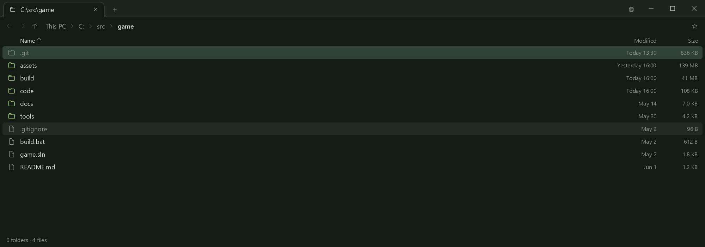
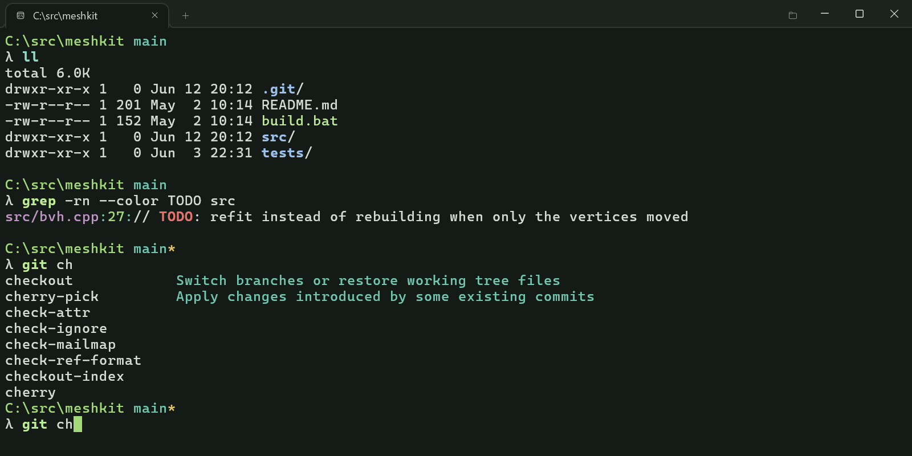

- faster than Windows Terminal
- 1 ms from keypress to screen
- switch between terminal and file explorer in every tab
- split panes, tabs you drag between them
- tabs keep running in the background
- tabs survive restarts and reboots
- Claude Code and other CLI agents, every session in a sidebar
- folder sizes, measured in the background
- tab completion and autosuggestions
- unix tools from Git for Windows
- search the scrollback